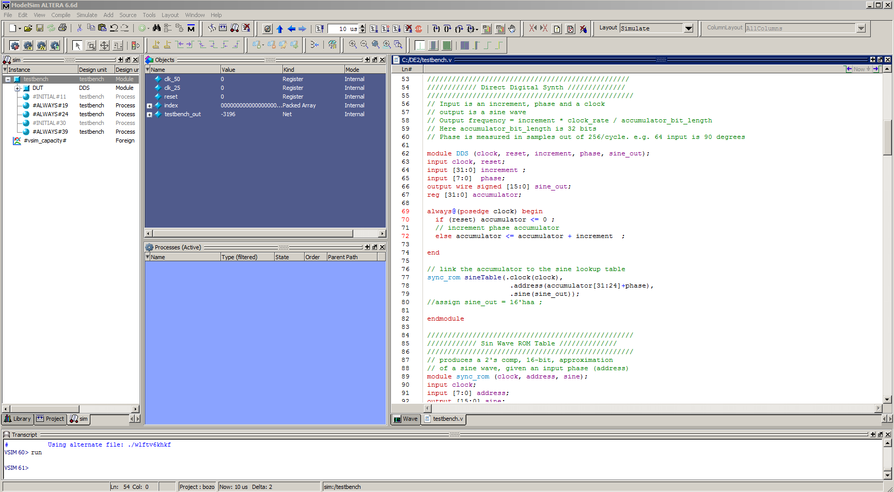
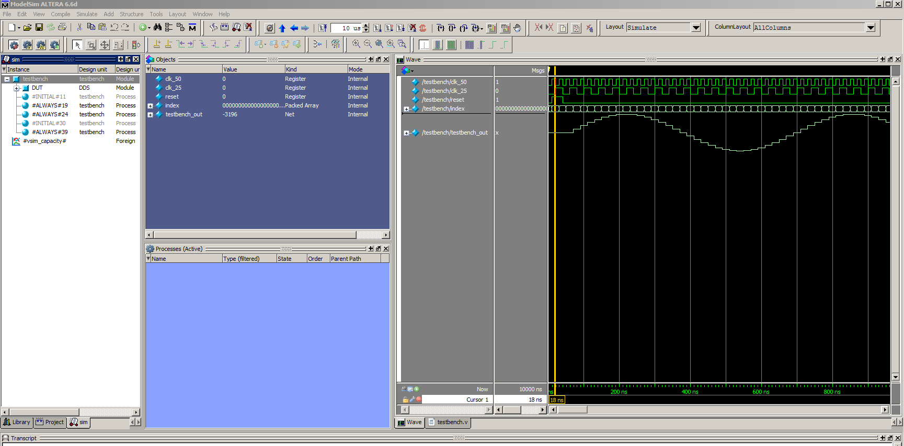
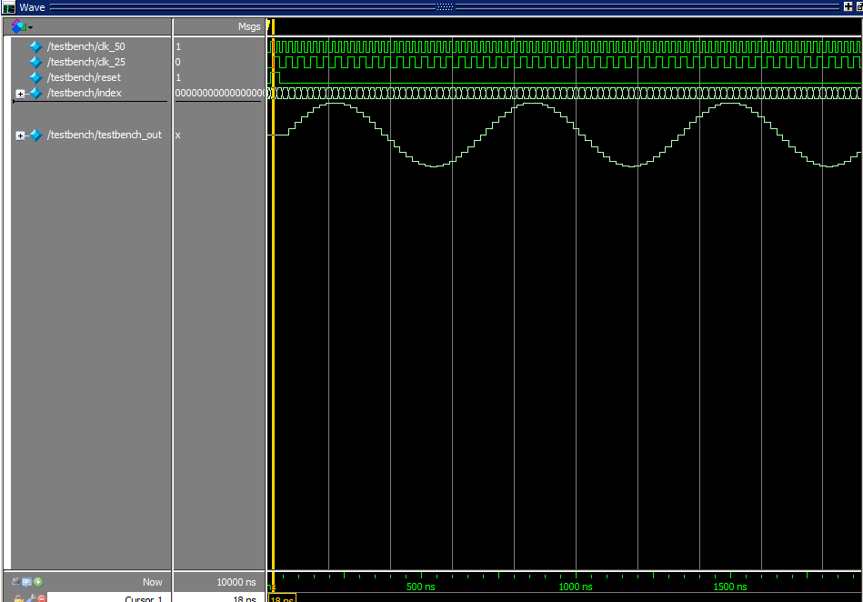
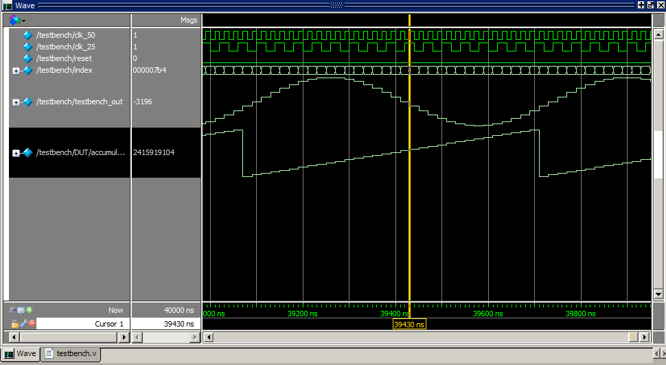
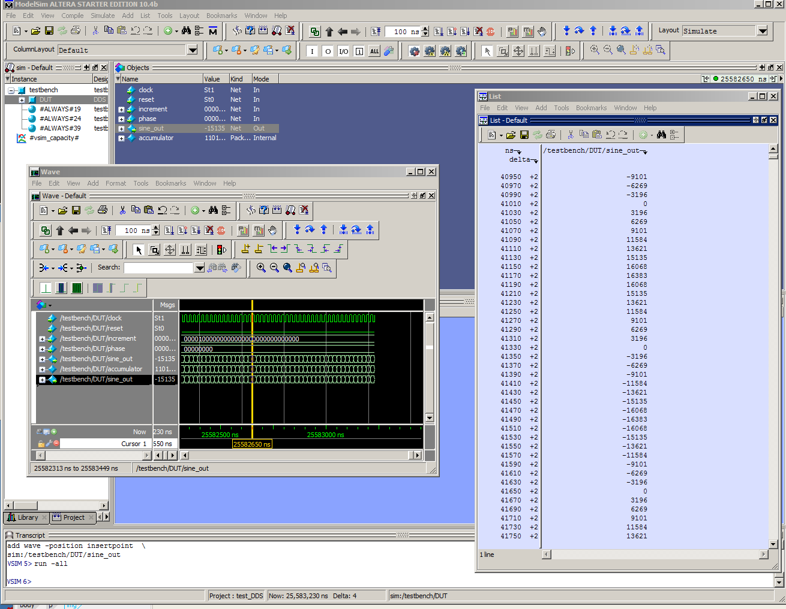

Although ModelSim is integrated into Quartus (See doc by Julie Wang), I found it easier to use it stand-alone.
An example follows, but there is no guarantee that my way of running ModelSim is even close to optimal.
The Device Under Test (DUT) in the example is a direct digital synthesis sine wave generator, as given below.
////////////////////////////////////////////////// //////////// Direct Digital Synth ////////////// ////////////////////////////////////////////////// // Input is an increment, phase and a clock // output is a sine wave // Output frequency = increment * clock_rate / accumulator_bit_length // Here accumulator_bit_length is 32 bits // Phase is measured in samples out of 256/cycle. e.g. 64 input is 90 degrees module DDS (clock, reset, increment, phase, sine_out); input clock, reset; input [31:0] increment ; input [7:0] phase; output wire signed [15:0] sine_out; reg [31:0] accumulator; always@(posedge clock) begin if (reset) accumulator <= 0; // increment phase accumulator else accumulator <= accumulator + increment ; end // link the accumulator to the sine lookup table sync_rom sineTable(clock, accumulator[31:24]+phase, sine_out); endmodule
The testbench source defines a clock and input values to the DUT, as well as the sine wave table module, in 2's complement, 16 bit format.
The full synthesizable verilog for DE2 is example 1 (third design) on the DE2 hardware page.
To simulate the DUT:
File...New...projectAdd existing File, and select testbench.vCompile...Compile All. You should see message # Compile of testbench.v was successful.Simulate...Start Simulation and in the dialog box navigate to work...testbench.vAdd....To Wave...Selected SignalsSimulate...Run...Run 100. You should see waveforms in the right panel.testbench_out and choose Format...Analog(automatic)clk_50 cycles.The following images shows the modelsim interface after the 10 steps above. (click to enlarge)

The following image shows the modelsim wave interface (click to enlarge)

The wave viewer zoomed in. Notice that the testbench_out signal is undefined before the reset pulse (yellow cursor line)
because the acculumator signal has not been initialized yet. Running the cursor over the waveforms reads out the value in the Msg panel.

Clicking on the DUT icon in the left panel shows more signals that you can display. Right-click on accumulator and choose Add....To Wave...Selected Signals. Now in the wave panel, right-click on the name accumulator and choose Radix...Unsigned. Then right-click again and choose Format...Analog(custom) and set the limits for a 32 bit signal. The following image shows the new accumulator phase waveform. The index wave was also set to Radix...Hexadecimal.

Exporting data from ModelSim
1. From the ModelSim console window, select "View" -> "List". A separate List window will pop up.
It may be handy to undock the list window.
2. Go to the waveform view, and select the signals you want to save as data.
3. Drag and drop the signals into the "List" window, opened in step 1.
4. The left row will be shown as time, the right row as signal status at that time.
5. From the List window, chose "File" -> "Write List" -> "Tabular" to save data.
6. You may need to change data formats:
To convert data type of exported signal in Modelsim: 1) View->Signal Properties 2) Change type under 'Radix' box
In the image below, the sine_out signal was dragged to the List.

ModelSim Simulation Design Examples
Copyright Cornell University April 27, 2017
{kind=link}
{kind=link}